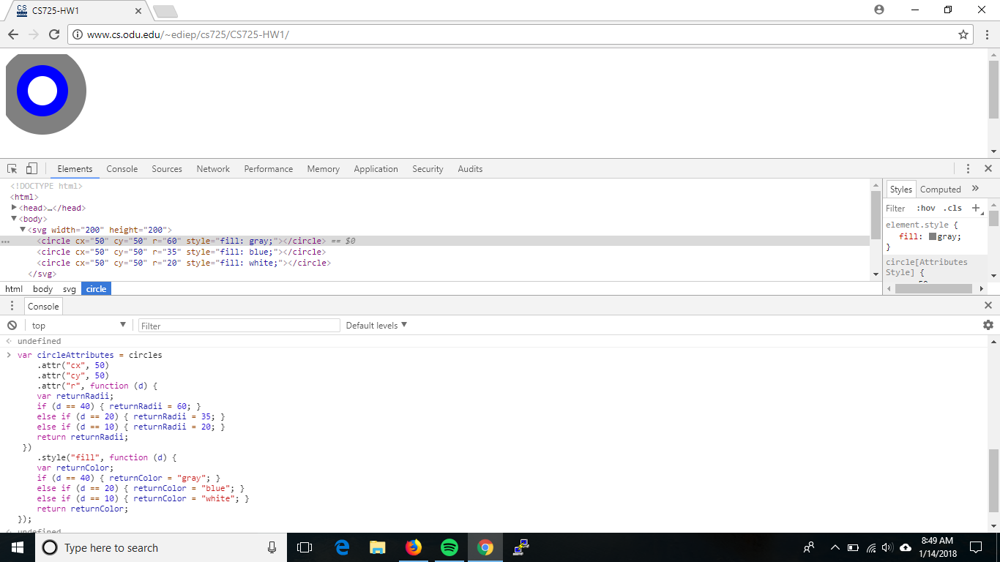

Below screenshot shows the rendered page, Elements tab, and JavaScript Console window for when I changed the circle radii and colors during the example in the section Creating SVG Elements Based on Data, "Styling SVG Elements Based on Data". 
Below SVG shows my solution from above not as an image.
Below SVG shows my solution for changing the value in the spaceCircles dataset to change the position of the circles, and to change the colors used.
The SVG coordinate system differs from the typical math coordinate system in that the 0,0 coordinate is in the top-left hand corner rather than bottom-left. Just like the typical math coordinate system, the X coordinate grows from left to right, but the Y coordinate grows from top to bottom. Instead of moving up the graph as the Y coordinate increases, we would travse downwards as the Y coordinate increases.